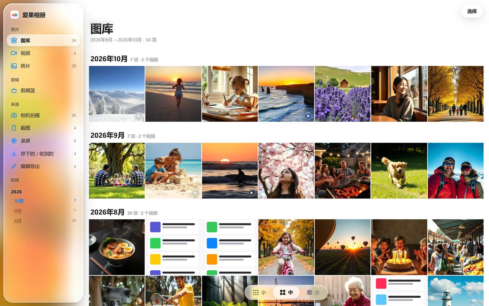
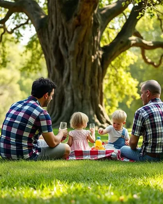
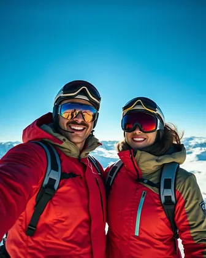
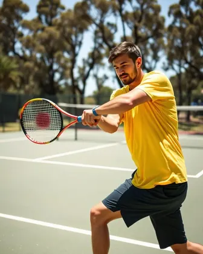
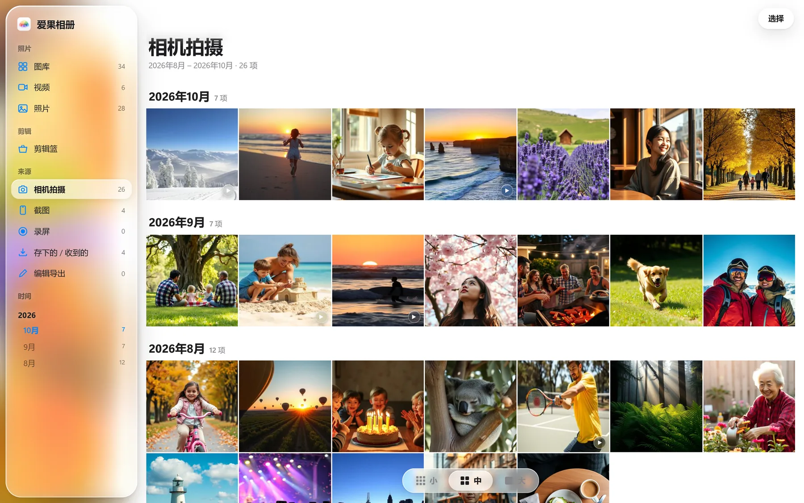
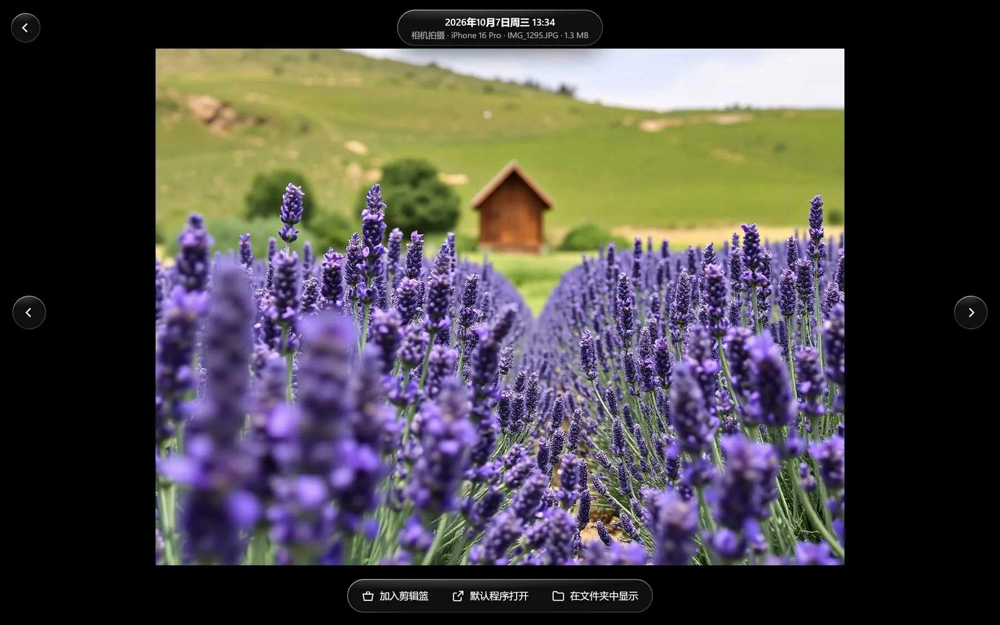
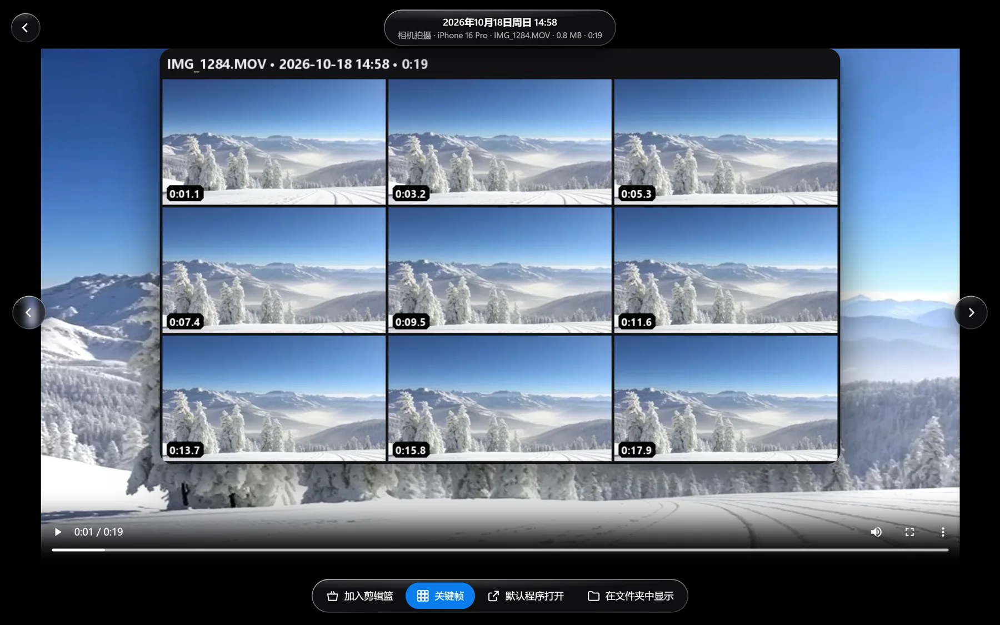
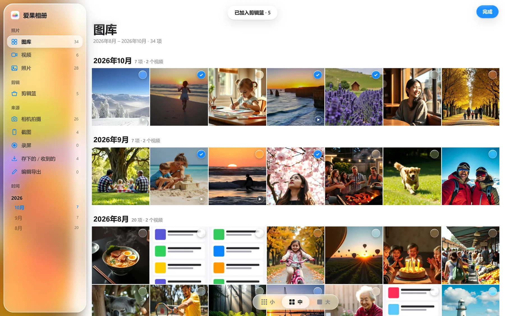
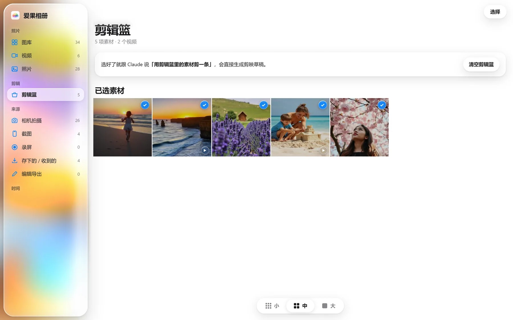
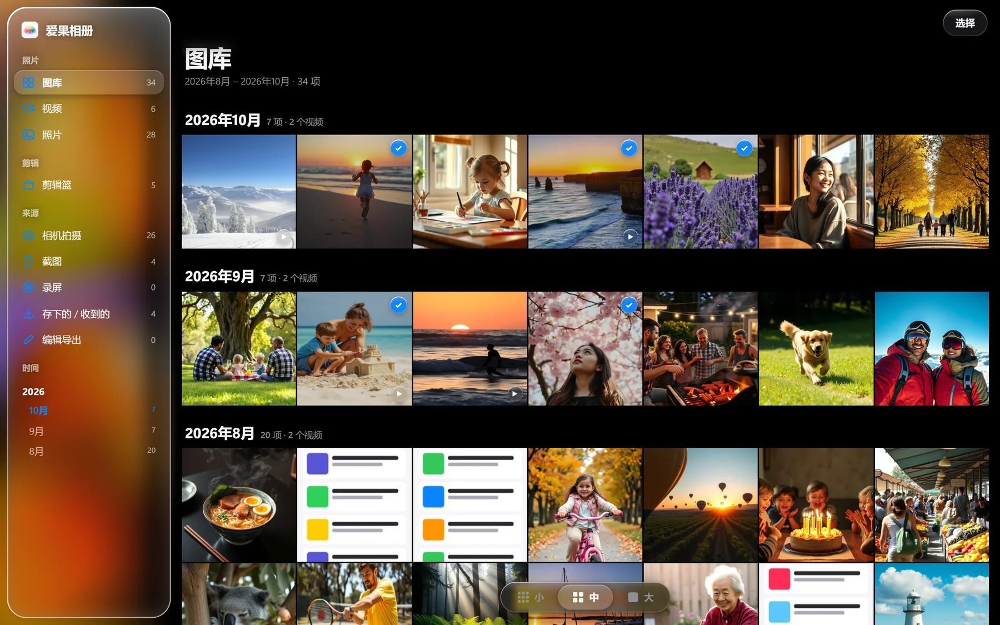

按月份，翻遍整个 iCloud 图库
缩略图直接取自 iCloud 的缓存，十万张照片随手翻，一张原片都不用下载。左边的液态玻璃侧边栏，一键跳到任何一个月。
- 零下载浏览
- 新照片 2 分钟内自动出现
- 小 · 中 · 大 三档缩略图
为 AI 自动剪辑视频而生 · for Windows
你的 iPhone 素材果园，AI 帮你摘下最好的那几秒。按月份浏览全部 iCloud 照片和视频，缩略图秒开、原片不用下载。挑好素材放进剪辑篮，Claude 直接把它变成剪映草稿。




它要解决的问题
iPhone 拍的一切，都在 iCloud 里。
到了 Windows，只剩一个塞着 85,025 个文件的平铺文件夹。
没有月份，没有缩略图，看不出哪天拍了什么。
想剪一条视频，得先把 440 GB 原片搬下来。
所以有了爱果相册。
浏览时预先下载的原片
缩略图请求最长等待，绝不卡住界面
新同步的照片自动出现在图库里
只在本机运行，任何内容都不上传
功能导览
下面都是爱果相册真实运行的界面截图。为了保护隐私，截图用的是 AI 生成的示例图库。
缩略图直接取自 iCloud 的缓存，十万张照片随手翻，一张原片都不用下载。左边的液态玻璃侧边栏，一键跳到任何一个月。
按文件名规律、画面比例和原片里的相机信息，自动分成相机拍摄、截图、录屏、存下的 / 收到的。剪片子时，只在真正拍的素材里找。

大图模式铺满窗口，玻璃控件浮在照片上。只有点开的这一张会从 iCloud 下载，← → 键切换，Esc 返回。

每条视频抽 9 帧拼成 3×3 小样，标好时间点，同时读出时长、分辨率、机型和拍摄地点。你看一眼就知道拍了什么，AI 也一样。

点右上角「选择」，之后每点一张就加入剪辑篮，勾选立刻显示，不用等任何加载。

挑好的素材都在剪辑篮里。跟 Claude 说「用剪辑篮里的素材剪一条」，它读取清单、取回原片，在剪映里生成一份能继续精修的草稿。

界面跟随系统切换深浅色，侧边栏后面是你正在看的那个月的照片，放大、模糊、缓慢流动。

市场
iPhone 拍、Windows 剪，是一大群人的日常。现有的工具要么只管搬运文件，要么只管剪辑，中间「从几万个文件里找到该用的几秒」这一段没人做。
这是我们的估算，不是统计数据。每一步的比例都是假设，写在左侧。
功能
iCloud for Windows 本来就为每个文件存了缩略图。爱果相册直接读取它，翻遍整个图库也不会触发一次原片下载。只有点开大图或播放视频时，才下载那一个文件。
图库按月分组，侧边栏一键跳到任何一个月。
把想用的照片和视频放进剪辑篮，清单自动保存成 剪辑篮.json。跟 Claude 说「用剪辑篮里的素材剪一条」，剪映里就多了一份可编辑的草稿。
点右上角「选择」，之后每点一张照片就加入或移出剪辑篮，再点「完成」或按 Esc 退出。勾选会立刻显示，不用等服务器回应。
按文件名规律、缩略图比例和原片里的相机信息，自动分成相机拍摄、截图、录屏、存下的 / 收到的、编辑导出。剪片子时只在真正拍的素材里找。
每条视频抽 9 帧拼成 3×3 小样，标好时间点，同时读出时长、分辨率、机型和拍摄地点。人看一眼就知道拍了什么，AI 也一样。
iPhone 的 .MOV 和 H.265 视频在应用里直接播放，播不了的格式一键交给默认播放器。
服务随 Windows 启动，空闲时把缩略图提前存好，你打开时就是秒开。
照片不经过任何第三方服务器，iCloud 文件夹里的文件一个都不移动、不改名。
对比
我们把常见的四类方案放在一起比。它们各自做好了一段，但从「iPhone 素材库」到「AI 剪好的片子」，中间那段只有我们在做。
| 爱果相册本产品 | iCloud for Windows+ Windows「照片」 | 传输备份工具CopyTrans · AnyTrans · 爱思助手 | AI 相册Mylio 等 | AI 剪辑剪映一键成片 · OpusClip · Eddie AI | |
|---|---|---|---|---|---|
| 浏览 | |||||
| 按月浏览全部 iCloud 照片 | ✓ | ~基础时间线 | –文件列表 | ✓需先导入 | – |
| 不下载原片也能看缩略图 | ✓ | ~依赖同步状态 | –要先下载 | –要先导入 | – |
| iOS 26 风格液态玻璃界面 | ✓ | – | – | – | – |
| 理解素材 | |||||
| 区分相机拍摄 / 截图 / 存下的 | ✓ | – | – | ~AI 标签 | – |
| 视频关键帧小样 | ✓ | – | – | – | ~上传之后 |
| 给 AI 读的素材索引 | ✓JSONL + 命令行 | – | – | – | – |
| 剪辑 | |||||
| 挑好的素材直接变剪映草稿 | ✓剪辑篮 → Claude | – | – | – | ~需自己整理上传 |
| 草稿可在剪映里继续精修 | ✓ | – | – | – | ~剪映可以，其他多为成片 |
| 易用性与隐私 | |||||
| 开始使用要做的事 | 双击打开 | 装 iCloud 客户端，再在照片 App 里关联 | 连线或登录，每次手动导出 | 把整个图库导入一遍 | 先把素材挑好、传上去 |
| 照片留在本机处理 | ✓只监听 127.0.0.1 | ✓ | ✓ | ✓ | –多为云端处理 |
从素材到草稿
按月份找到那天拍的素材，鼠标移到缩略图上，点右上角的圆圈放进剪辑篮。
Claude 读取剪辑篮清单，把需要的原片从 iCloud 取下来，按你的要求排好顺序。
用剪辑篮里的素材剪一条得到的是一份完整的剪映草稿：转场、字幕、配乐都在轨道上，可以接着精修。
设计
界面参考 iOS 26 的液态玻璃：控件是浮在照片上方的玻璃胶囊，会折射、会透色、会在边缘反光。拖动下面这块玻璃试试，它用的就是应用里同一套折射滤镜。
一张透镜位移图让玻璃边缘把后面的画面向内弯折，中间保持清晰。
左上亮、右下暗的细边，加一层顶部柔光，让玻璃有厚度。
侧边栏背后是你正在看的那个月的照片，放大、模糊、缓慢流动。
标题、选择、分段控件都浮在内容上方，滚动时照片从下面穿过。
原理
| 缩略图 | Windows 外壳接口 IShellItemImageFactory，带 SIIGBF_THUMBNAILONLY 标志，只取 iCloud 已缓存的缩略图，不触发下载 |
|---|---|
| 排队策略 | 后进先出队列 + 4 路并发：你正在看的缩略图先生成；请求最多等 1.5 秒就先返回，浏览器的 6 个连接永远不会被占满 |
| 后台预热 | 空闲 10 秒后，按从新到旧把全部缩略图存进本地缓存 |
| 窗口 | pywebview + WebView2，Windows 11 系统 Acrylic 背景，打包为独立的 iCloudPhotos.exe |
| 服务 | Python 标准库 HTTP 服务，只监听 127.0.0.1:8765，支持视频断点续传（Range） |
| 与剪映衔接 | 剪辑篮保存为 素材库\剪辑篮.json，由 Claude 的剪映草稿流程读取 |
路线图
按 AI 接口、设计、功能、易用性四个方向整理。排在最前面的，是能让「拍完 → 发出去」这条路更短的事。
让 AI 不打开一个原片，就知道该用哪几秒。
让它看起来、用起来都更像原生应用。
把挑素材、剪视频的环节接得更紧。
少点几下，少等几秒。
内测招募
爱果相册正在小范围内测。如果你也是 iPhone 拍、Windows 剪，欢迎来一起把它打磨好。
内测名额有限，按报名顺序和使用场景分批邀请。我们只用你留下的联系方式发送内测邀请。